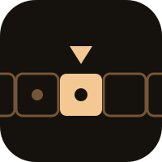

Building small language models in the open.
She works the Mac. She designs logos. She paints. Watch.
The real build in Pixelmator Pro. 2997 layers, eight minutes. Say "paint ~/Downloads/mona.jpg".
Hover or tap the line to see where each roadmap phase landed.
Lower is better. A falling line means she is learning.
Samantha is a LoRA fine-tune of a small open base model, trained on the project's own Obsidian wiki and READMEs so it actually knows the codebase and writes in house voice. No from-scratch pretraining, that path was tried once (project code name Arthur) and produced gibberish. This time: small model, real data, short loop, iterate.
Click one open. These are real captured transcripts from actually running the CLI, not simulated. No live inference on this page, the model runs locally via MLX, not servable from a static site without real hosting infra.
Before · v0.6.6
Q: Is this project blocked?
"Many domain names are blocked in mainland China under the country's Internet censorship policy..." — wrong topic entirely, hijacked by a Wikipedia search.
After · v0.7.0
Q: Is this project blocked?
"The Qwen3.5-0.8B base comparison is blocked, it doesn't fit this machine's training memory budget even with the Metal cache-limit fix applied."
Turn 1
You: What is Turing?
Samantha: "Turing is the project: the pipeline, the repo, this whole effort to build small language models on consumer hardware."
Turn 2, before · v0.7.0
You: What is its first model called?
Samantha: "A large language model (LLM) is an AI model trained on a vast amount of text..." — no memory of turn 1 at all.
Turn 2, after · v0.7.1
You: What is its first model called?
Samantha: "Turing's first model is Samantha, fixed as a name."
Before · v0.6.6
Q: What tool trains the adapter?
"...trained using a different method (Adversarial Training for Speech, ATR), not LoRA." — fabricated, ATR isn't a real thing here.
After · v0.7.0
Q: What tool trains the adapter?
"I don't have that pinned down confidently from what's currently indexed, not going to guess at the specifics." — honest, not a guess.
Prompt
Write a one-line commit message for fixing an MLX memory leak during training.
"Fix a real MLX memory leak during long unattended runs"
Trained on real instruction/response pairs harvested from this repo's own git history, so it learned actual task style, not just "tell me about X" facts.
29 of 29 on the hand-written eval set, 16 of 16 on a separate held-out set (automated scoring, not eyeballed). Still shaky on ambiguous general-knowledge questions, see eval/ for the honest numbers.
git clone https://github.com/nulljosh/turing cd turing python3 -m venv .venv && ./.venv/bin/pip install mlx-lm ./.venv/bin/python chat.py
Retrieval currently only searches this project's own docs on purpose, but its RAG index already spans the whole ~50-repo fleet. The real leveraged version isn't a bigger model, it's a wider index: drop that bias and this becomes a small local assistant that can answer questions across every project, not just this one. Not started yet, a real scope change, tracked in the README and roadmap as it develops.